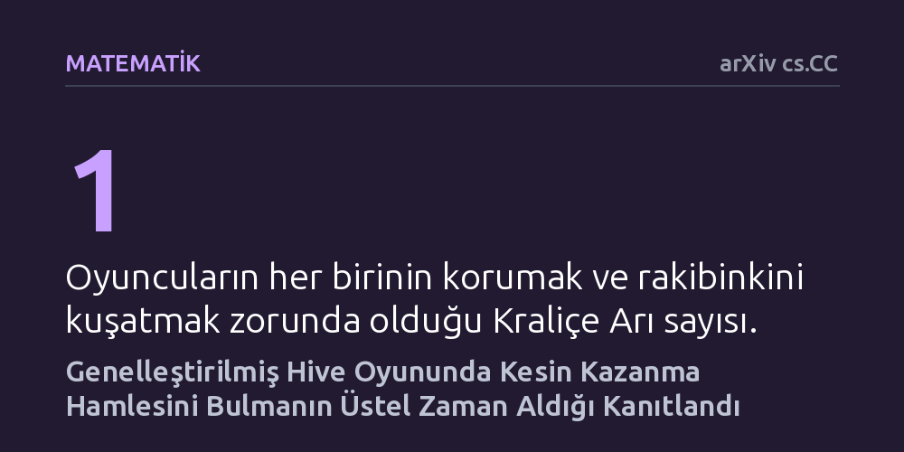

MATEMATIK · arXiv cs.CC · 2026-10-15
Araştırmacılar, tahtasız strateji oyunu Hive'ın büyütülmüş versiyonlarında bir oyuncunun kesin galibiyeti zorlayıp zorlayamayacağını matematiksel olarak inceledi. Yapılan kuramsal ispat, tek kraliçe arıyla oynansa ve tüm taşlar dizilmiş olsa bile bu kararı vermenin üstel zaman gerektiren en zor problemler sınıfında olduğunu gösterdi.
Görünüşte basit ve tahtasız bir böcek temalı kutu oyununun, satranç ve Go gibi devlerle aynı kuramsal zorluk liginde yer aldığını göstererek kusursuz bir hamle algoritması geliştirmenin pratik sınırlarını ortaya koyuyor.

Kutu oyunları dünyasında 2000'li yılların başından bu yana kendine sadık bir kitle edinen Hive, klasik tahtalı strateji oyunlarından farklı bir yapı sunar. Oyunda sabit bir oyun tahtası yoktur; oyuncular altıgen biçimli böcek taşlarını birbirine bitiştirerek oyun alanını bizzat kendileri inşa eder. Temel amaç ise son derece nettir: Kendi Kraliçe Arınızı korurken, rakibin Kraliçe Arısını altı yönden tamamen kuşatmak. Kuralların öğrenilmesi yalnızca birkaç dakika sürse de, oyunun taktiksel derinliği strateji tutkunlarını uzun süredir cezbetmektedir.
Bilgisayar bilimcileri ve matematikçiler için bir oyunun popülerliğinden ziyade hesaplama karmaşıklığı merak konusudur. Bir oyundaki taş sayısı arttığında, belirli bir konumda bir tarafın kazanmayı garantileyen bir hamle dizisine sahip olup olmadığını hesaplamak bilgisayarlar için ne kadar zordur? Satranç, Dama ve Go gibi klasik oyunların genelleştirilmiş boyutları için bu sorunun cevabı yıllar önce verilmişti. Ancak Hive'ın tahtasız yapısı ve taşların sürekli birleşik bir kovan oluşturma zorunluluğu ("Tek Kovan" kuralı), bu analizi uzun süre cevapsız bırakmıştı.
Bir oyunun zorluğunu kanıtlamak için araştırmacılar binlerce maç simülasyonu çalıştırmaz; bunun yerine kuramsal bilgisayar biliminin temel araçlarından biri olan "indirgeme" yöntemine başvururlar. Bu yöntemde araştırmacılar, zorluğu daha önceden kesin olarak ispatlanmış matematiksel bir bulmacayı alır ve bu bulmacanın her bir parçasını incelenen oyunun kurallarıyla adım adım yeniden inşa ederler. Eğer o zor bulmaca oyunun kuralları içinde birebir canlandırılabiliyorsa, oyunun da en az o bulmaca kadar zor olduğu matematiksel olarak kanıtlanmış olur.
Francesco Carboni ve Daniele Muscillo, bu çalışmada "sınırsız iki oyunculu Kısıt Mantığı" adı verilen soyut bir matematiksel problemden yararlandı. Araştırmacılar, karmaşık mantıksal ağlardaki yönelimleri Hive oyunundaki Çekirge taşlarının atlama mekanikleriyle kodladı. Mantık ağının düğüm kısıtlamalarını ise oyunun en temel kuralı olan ve kovanın asla iki ayrı parçaya bölünemeyeceğini belirten "Tek Kovan" kuralı ile güvence altına aldılar.
İspat sürecinde araştırmacılar, kovanın masa üzerindeki konumunun sağa, sola veya yukarı kaymasının oyunun özünü değiştirmediğini hesaba katarak problemin olası tüm durum uzayının sınırlarını belirlediler.
Araştırmacıların ulaştığı sonuç nettir: Oyuncuların birer Kraliçe Arıya sahip olduğu genelleştirilmiş Hive oyununda, masadaki taşlar önceden dizilmiş olsa dahi Beyaz oyuncunun galibiyeti zorlayıp zorlayamayacağını belirlemek "EXPTIME-tam" sınıfındadır. Bu teknik ifade, söz konusu problemin bilinen en verimli algoritmalarla bile üstel zaman gerektirdiğini, yani tahta boyutu ve taş sayısı büyüdükçe gereken işlem süresinin kontrol edilemez bir hızla patladığını gösterir.
Bu bulgu, oyunun kuramsal karmaşıklığı üzerine daha önce Andel ve Rin tarafından ortaya atılan açık soruyu nihayete erdirmiştir. Çalışma ayrıca kural sisteminin yalnızca tek kraliçeli standart oyun için değil, oyuncuların birden fazla kraliçe arıya sahip olduğu varyantlar için de aynı derecede zor olduğunu doğrulamaktadır. Yazarların belirttiği üzere bu çalışma, "doğal bir problem için EXPTIME-tamlığını kanıtlamada sınırsız iki oyunculu Kısıt Mantığının bilinen ilk kullanımı" olma özelliğini taşımaktadır.
Bu sonucun pratik dünyadaki anlamı, genelleştirilmiş Hive için hiçbir bilgisayarın her pozisyonda kusursuz hamleyi anında hesaplayabilecek evrensel ve hızlı bir çözücüye sahip olamayacağıdır. Tıpkı satranç ve Go oyunlarının genişletilmiş tahtalarında olduğu gibi, Hive da en zor hesaplama sınıflarından birinde yer almaktadır. Bir bilgisayar programı ne kadar güçlü olursa olsun, taş sayısı arttıkça gelecekteki tüm hamle kombinasyonlarını tüketerek kesin bir galibiyet planı çizmek kuramsal bir engele çarpmaktadır.
Yine de bu bulguyu değerlendirirken dikkatli olmak gerekir. İspat, sonlu sayıda taşa sahip standart ev tipi Hive kutusunun anında çözülemez olduğunu söylemez; oyunun taş sayısı n mertebesinde büyütülebildiğinde problemin genel olarak üstel zamana dayandığını ifade eder. Ayrıca çalışma, oyunculara maç kazandıracak pratik taktikler sunmaktan ziyade, oyunun doğasındaki matematiksel derinliğin sınırlarını çizen kuramsal bir yapı taşır.